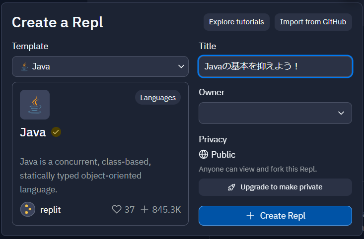
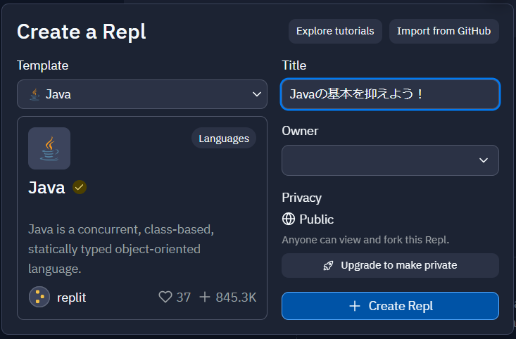

Javaの基本を抑えよう！
プログラミングが初めての方はこちらから！
Javaって何?
Javaって何?
Javaは世界的に有名なオブジェクト指向の静的型付け言語です。
プラットフォームに依存せず実行でき、WebアプリケーションやAndroidアプリ、ゲームなど様々なことに使用できます。
その影響もあってこの学校でもよく使われている言語です。
実行環境
今回はウェブ上でプログラミングができるサイトであるRepl.itでプログラムを行います。
以下の設定でプログラムを作る。
プログラミングが初めての方はこちらから！
Javaは世界的に有名なオブジェクト指向の静的型付け言語です。
プラットフォームに依存せず実行でき、WebアプリケーションやAndroidアプリ、ゲームなど様々なことに使用できます。
その影響もあってこの学校でもよく使われている言語です。
今回はウェブ上でプログラミングができるサイトであるRepl.itでプログラムを行います。
以下の設定でプログラムを作る。
